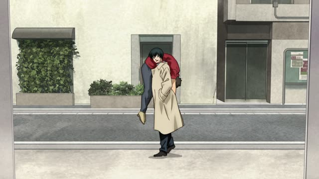
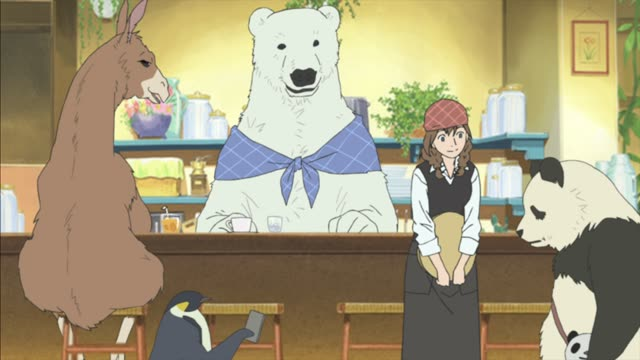

～て (Reason)
Kekkon Dekinai Otoko · Episode 1
でも、この家を見て安心しました。
"But seeing this house, I feel relieved." [she worried it would be too strange]
The plain て-form can give a reason, usually for a feeling: 見て安心した, "I saw it, so I feel relieved". The first part causes the second.
On this card, a woman was worried her new house would be too strange, and seeing it calms her down. 安心しました makes it polite.
The second part is usually a feeling or something you can't control: よかった, うれしい, 困った, びっくりした, 安心した. For a decision or a request, use から instead.

Sakamoto Days · Episode 3
会えてよかったよ、坂本君。
"I'm glad I got to see you, Sakamoto."
On this card, an old colleague says goodbye. 会えて (could meet) + よかった: because I could see you, I'm glad. ～てよかった is the most common one.
Quick Examples
Your friend finally calls back.
声が聞けてうれしい。
"I'm happy I got to hear your voice."
CasualApologizing to your teacher.
遅くなってすみません。
"Sorry for being late."
～てすみません: sorry for doing it.
PoliteYour friend got sick before the trip.
病気で行けなかった。
"I couldn't go because I was sick."
After a noun: で.
CasualYou hear the exam results.
合格できてよかったです。
"I'm glad I passed."
PoliteWith and without
会えた。よかった。
"I got to see you. I'm glad." Two separate thoughts.
会えてよかった。
"I'm glad I got to see you." The first causes the second.
Examples from Media
Quartet · Episode 1
皆さんに偶然出会えてよかったです。
"I'm glad I met you all by chance."

Shirokuma Cafe · Episode 4
スマフォが無事でよかったです。
"I'm glad your phone is okay."
無事 is a な-adjective, so で.
Goblin Slayer · Episode 9
街の下じゃなくてよかったですよ、本当に。
"I'm really glad it wasn't under the town."
じゃない → じゃなくて.
Oishinbo · Episode 49
まあ、しかし足首でよかったですよ。
"Well, it's lucky it was just his ankle."
If it had been his hand, he couldn't work.
Good Morning Call · Episode 12
私、ゆかりさんと話せてよかった。
"I'm glad I got to talk with you, Yukari."
Midnight Diner: Tokyo Stories · Season 2, Episode 5
お前が寄付してくれてうれしかったよ。
"I was happy you donated."
Vinland Saga · Episode 4
ハハ…会えてうれしいぜ、トールズ。
"Ha... good to see you, Thors."
Slam Dunk · Episode 45
君がいてよかった。
"I'm glad you're here."
Coach Anzai to Mitsui.